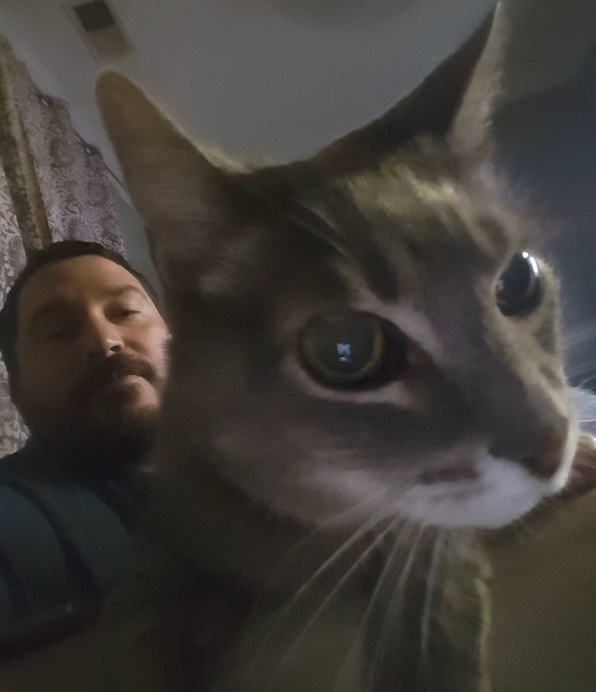

About Me
I was born in Wilmington, NC and raised in Bolivia, NC (You've probably never heard of it). After high school, I graduated from East Carolina University. That's also where I met my wife, Lucy. We moved to Charlotte in 2008. We're currently expecting our first child in July and we have a 17 year old cat name Caesar.
I enjoy travelling. Some of my favorite spots are St. Augustine, Fl, Charleston, SC, Savannah, GA, Mt. Mitchell, NC. I also like football, roller coasters, comic books, metal, and movies. I was selected Time Magazine's "Person of the Year" in 2006.
Connect with Me